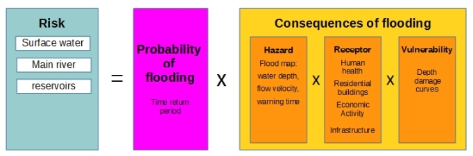
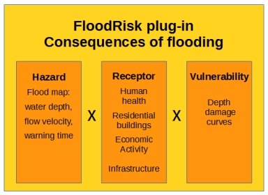

Benvenuti alla documentazione di FloodRisk¶
FloodRisk¶
Cos’è FloodRisk ?
FloodRisk è un plugin per QGIS che consete la stime delle conseguenze di un’inondazione, in termini di perdite di vite e di danni economici diretti.
Il termine RISCHIO : Rischio = (Probabilità) x (Conseguenze)
FloodRisk riguarda la stima delle conseguenze
Il Plug-in¶
Contenuti: